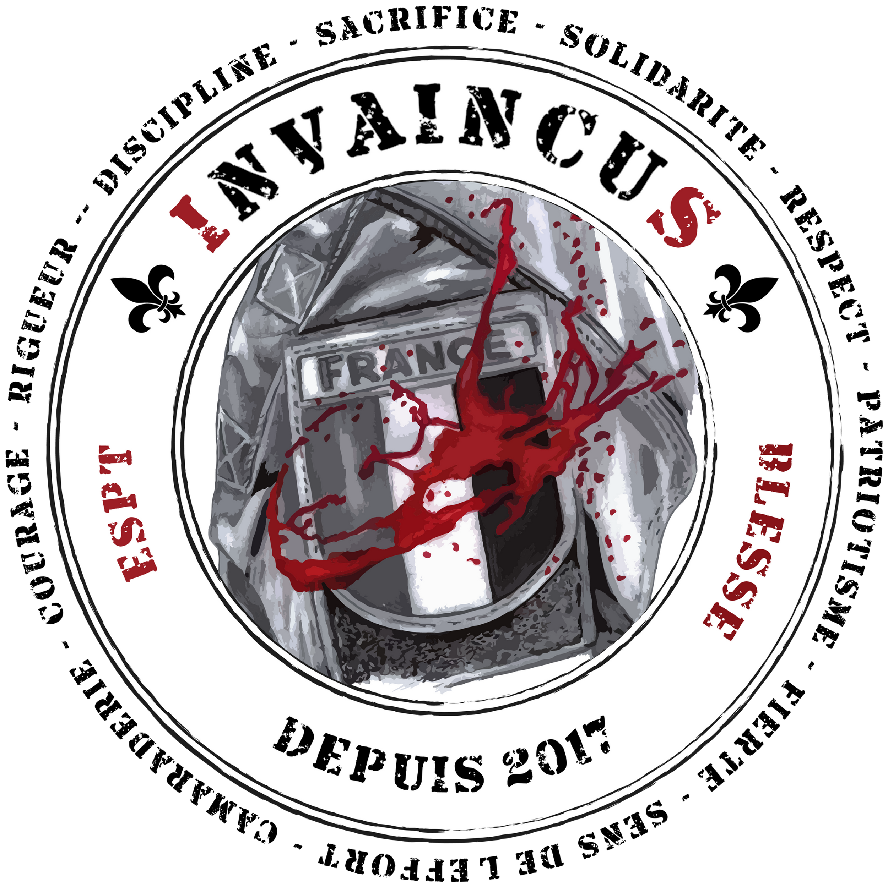

Invaincus
DESCRIPTION
- Association d'accompagnement des militaires traumatises psychiques
- Soutien psychologique specialise et therapies adaptees aux blesses psychiques
- Abbaye de Senanque (Vaucluse) et future structure d'accueil permanente
- Rencontres therapeutiques organisees depuis 2021, accompagnement par des professionnels qualifies
- Offrir un espace de guerison et de reconstruction pour les militaires souffrant de traumatismes operationnels
CONTACTS
16 rue de l'Eze,84240 La Tour d'Aigues
